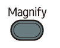
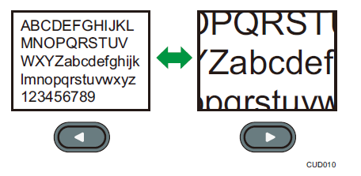
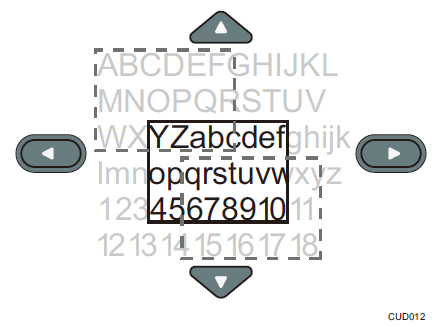

放大图像¶
- 放大显示部分图像。
- 图像可以在100%至200%的范围内放大。
- 由于数字处理原因，放大的图像变成颗粒状。
按 [Magnify] 按钮。
数值条出现在屏幕底部。
使用 [#] 和 [#] 按钮调节放大比例。
按 [#] 按钮可减小放大比例。按 [#] 按钮可增大放大比例
按 [Enter] 按钮。
使用 [▲] 、 [▼] 、 [◀] 和 [▶] 按钮移动显示位置。
要更改放大比例，请按 [Enter] 按钮，然后重复步骤2。
要取消此功能，请再按一次 [Magnify] 按钮。
Note:
如果执行任何操作，则放大功能会自动取消。
当放大图像或者移动放大的部分时，图像有时候可能会中断。